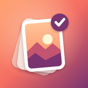

PhotoClean Privacy Policy
Last updated: November 18, 2026
PhotoClean sorts your photo library and turns screenshots into actions on your iPhone. It has no account, no servers of its own, and no analytics or advertising. We, the developer, never receive your photos, screenshots, the text in them, or anything PhotoClean learns about them.
This policy explains what PhotoClean reads, what it stores on your device, and the few cases where Apple's own services are involved.
What PhotoClean reads, and why
PhotoClean asks for each permission only when it needs it. You can change any of them in Settings → PhotoClean on your iPhone.
| Permission | What PhotoClean does with it |
|---|---|
| Photos (full or limited access) | Reads your photos and screenshots to sort them. It creates albums and folders of its own and adds photos to them. It writes captions for screenshots you keep as receipts or ideas. It never changes or removes albums you made. It deletes photos only when you confirm in the iOS prompt, and those go to Recently Deleted. |
| Calendar (add events only) | Adds an event when you accept an event suggestion. It can't read your existing events. |
| Reminders | Creates a reminder when you accept a reminder suggestion. |
| Contacts | Saves a contact when you accept a contact suggestion. |
| Notifications (optional) | Sends at most one reminder in the evening about screenshots from that day. You can turn it off in PhotoClean's Settings. |
When you accept a link, PhotoClean adds it to Safari's Reading List. When you accept a place, it opens Apple Maps.
Processing happens on your iPhone
Classifying photos, reading the text in screenshots, and suggesting actions are done on your device. PhotoClean uses Apple's on-device frameworks (Vision, and Apple Intelligence's on-device model where your iPhone supports it). The images and their text are not sent to us or to any third party for this.
When Apple's services are involved
PhotoClean doesn't run any servers, but two features rely on Apple:
- Place names for albums. To name albums like "Sat, Mar 7 · Brooklyn", PhotoClean asks Apple Maps for the name of the area where a photo was taken. Only a rounded area of about 5 km is sent, never a photo's exact location. No image or other photo data is included. Apple handles these requests under the Apple Privacy Policy.
- iCloud Photos. If your library is in iCloud Photos and the original isn't on your iPhone, iOS may download it from your own iCloud account so PhotoClean can look at it, the same way the Photos app does.
What PhotoClean stores, and where
PhotoClean keeps a small database inside the app on your iPhone. It holds:
- the bucket and album each photo was sorted into, and its date and approximate place
- for screenshots: the text read from them, the suggested action and what you decided
- corrections you've made, so it can learn your preferences, which you can review and delete in Settings → Diagnostics
- simple counts used for the statistics in Diagnostics (for example, how many suggestions you accepted). These are computed and kept on your iPhone only.
The Home Screen widget shows only the number of waiting screenshots and their types, which the app shares with the widget on your device.
This data is backed up with the rest of your iPhone's app data, to iCloud or your computer, if you have device backups turned on. Deleting PhotoClean removes this data from your iPhone. Albums PhotoClean created stay in the Photos app until you delete them there.
What we collect
Nothing. PhotoClean contains no analytics, advertising or tracking code and doesn't create an account.
If you choose to share them, Apple may give us crash reports and feedback you send through TestFlight (during the beta) or through the App Store. These are handled under Apple's terms. We use them only to fix problems.
Children
PhotoClean isn't directed at children under 13 and doesn't knowingly collect information from anyone.
Changes
If this policy changes, we'll update the date above and describe the change in the app's release notes.
Contact
During the beta, send questions about privacy with the Send Beta Feedback option in the TestFlight app. A contact email will be added here before PhotoClean is released on the App Store.